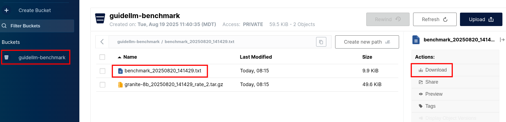
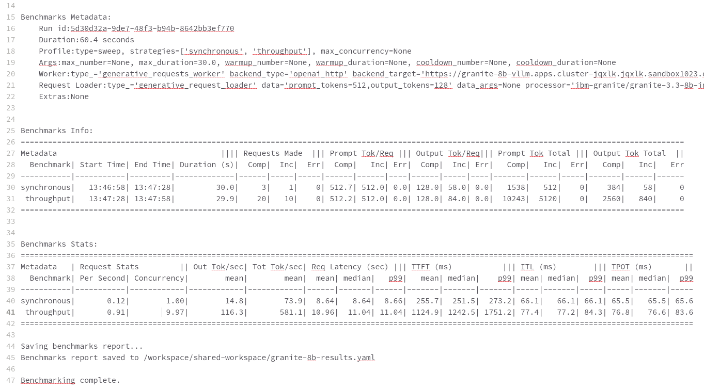

Running Your First Benchmark
Setting Up Your Benchmarking Environment
In this module, we will set up an automated Tekton pipeline on OpenShift AI to run our GuideLLM benchmarks. Using a Tekton pipeline provides automation, reproducibility, and efficient resource management for our tests.
1.1 Install the Tekton CLI
First, ensure the Tekton CLI (tkn) is installed in your terminal. This tool will allow us to interact with our pipelines.
curl -sL $(curl -s https://api.github.com/repos/tektoncd/cli/releases/latest | grep "browser_download_url.*_Linux_x86_64.tar.gz" | cut -d '"' -f 4) | sudo tar -xz -C /usr/local/bin tkn
tkn version1.2 Deploy the GuideLLM Pipeline Resources
Next, we will clone the necessary Git repositories and apply the Kubernetes resources that define our pipeline, its tasks, and the required storage.
-
Clone the ETX vLLM optimization repo which contains the pipeline definition.
git clone https://github.com/redhat-ai-services/etx-llm-optimization-and-inference-leveraging.git cd etx-llm-optimization-and-inference-leveraging -
Clone the GuideLLM pipeline repo itself.
git clone https://github.com/jhurlocker/guidellm-pipeline.git -
Apply the PVC, task, pipeline, and Minio bucket configuration to your cluster. Ensure you are in the correct namespace (
vllm).oc apply -f guidellm-pipeline/pipeline/upload-results-task.yaml -n vllm oc apply -f guidellm-pipeline/pipeline/guidellm-pipeline.yaml -n vllm oc apply -f guidellm-pipeline/pipeline/pvc.yaml -n vllm oc apply -f guidellm-pipeline/pipeline/guidellm-benchmark-task.yaml -n vllm oc apply -f guidellm-pipeline/pipeline/mino-bucket.yaml -n vllm
With these resources created, we are now ready to execute a benchmark.
Now that the pipeline is set up, let’s run our first test. This will help us establish a baseline and understand the end-to-end workflow.
2.1 Prepare the Target Model
Before running the pipeline, ensure your target model is deployed and accessible. For this lab, we will use the granite-8b model.
-
Get the inference endpoint URL for your deployed model.
export INFERENCE_ENDPOINT=$(oc get inferenceservice granite-8b -n vllm -o jsonpath='{.status.url}') echo $INFERENCE_ENDPOINTIf you have not deployed the granite-8bmodel yet, run the following Helm command:
helm upgrade -i granite-8b redhat-ai-services/vllm-kserve --version 0.5.11 --values workshop_code/deploy_vllm/vllm_rhoai_custom_2/values.yaml -n vllm
2.2 Execute the Pipeline
Now, we will start the Tekton pipeline. We’ll pass parameters to define the target model, the workload profile (data-config), and the test type (rate-type). We will use a sweep which automatically tests a range of request rates.
tkn pipeline start guidellm-benchmark-pipeline -n vllm \
--param target=$INFERENCE_ENDPOINT/v1 \
--param model-name="granite-8b" \
--param processor="ibm-granite/granite-3.3-8b-instruct" \
--param data-config="prompt_tokens=512,output_tokens=128" \
--param max-seconds="30" \
--param huggingface-token="" \
--param api-key="" \
--param rate="2" \
--param rate-type="sweep" \
--param max-concurrency="10" \
--workspace name=shared-workspace,claimName=guidellm-output-pvc2.3 Retrieve and View Results
The pipeline will run the benchmark and upload the results as a text file to a Minio S3 bucket.
-
Get the route to the Minio UI. The login is
admin/admin123.oc get route minio-ui -n ic-shared-minio -o jsonpath='{.spec.host}' -
Navigate to the Minio URL in your browser, log in, and find the
guidellm-benchmarkbucket. -
Download the
benchmark-<TIMESTAMP>.txtfile and open it in a text editor to view the raw results.